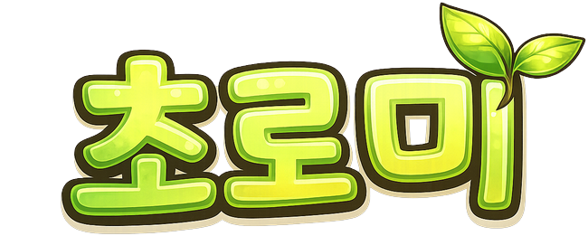

Dedicated Server Archive
Choromi Game Servers
함께 운영한 데디케이트 서버의 설정과 기록, 현재 준비 중인 월드를 한곳에서 확인합니다. 새로운 게임 서버도 같은 허브에 계속 추가됩니다.
2개의 서버 페이지 · 다음 월드 준비 중

ACTIVE
NODE 01
Viking Survival
Valheim
4인 협동 월드의 서버 설정, 적용 모드와 진행 기록을 확인합니다.

PREPARING
NODE 02
Co-op Survival Campaign
Project Zomboid
Build 42 기반 탈출 캠페인과 공지, 모드팩, 서버 운영 정보를 제공합니다.